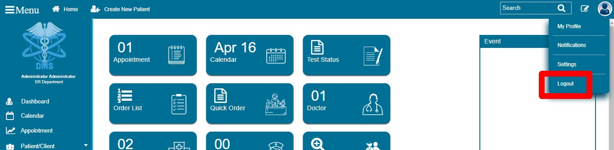
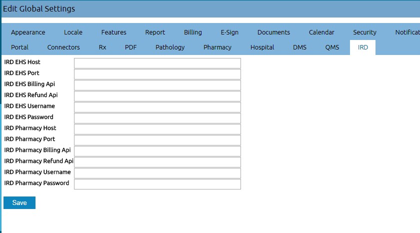

Dotmark Medical Solutions (DMS) Doctor Manual
"Easy, Quick and Efficient"
At DMS we strive to facilitate and streamline all your enterprise needs to achieve excellent care delivery and clinical
productivity.
Introduction
After logging in, you will be navigated to the DMS dashboard. DMS dashboard contains tools that can be used for many purposes. These all will be discussed in this manual.
Doctor can scan NFC card directly to view the patient details from this screen. NFC card won't work on other screens.

Click on the icon on the top-right corner of the screen to view options related to the user account.
Clicking log out will sign you off from the session and redirect you to the log in page.

Feedbacks
Feedbacks for improving DMS system, error reporting and additional comments can be sent. Press feedback icon on the top
right corner next to the Search bar and fill up the form.

Events and Notices
Upcoming events and notices can be easily added to the dashboard. On the side bar scroll down, find
Events and Notice. Click on them and fill up the form as required and post it on the dashboard.
NOTE:
Every account holder can view this on their dashboard and could be super useful, so it should be properly utilized.
These messages will be posted for certain time only.From and To indicates start date and end date respectively of that message.
Create New Patient
Click on the Create New Patient button on the top left of the screen as shown in the image below.

Click on the checkbox as shown in the figure below to reveal its content and fill up the patient details and press Create New Patient on the bottom of the page. Note that entering the age of the patient will auto convert the patient's age. To use this facility simply type the age of the patient in the D.O.B section and focus-out (click somewhere else) to convert age into date in yyyy-mm-dd format as shown in the image below.
Here,
-
Who section contains primary details and if any mandatory field is missed out then a message will be displayed,
and missing fields will be marked red.

-
Contact: This is the contact details of the patient.

-
Choices: Patient's custom preferences.
-
Provider: This is the Doctor.
-
Referring Provider: Provider referring to another provider.
-
Pharmacy: Pharmacy that patient prefers.
-
HIPAA Notice Received: The HIPAA Privacy Rule mandates that health care providers distribute a Notice of Privacy
Practices to all patients. The Notice of Privacy Practices also describes the HIPAA defined patient rights related
to use and disclosure of the individual's health information.
-
Leave Message With: Not Applicable.
-
Allow SMS: Not Applicable.
-
Allow Immunization Registry Use: Not Applicable.
-
Allow Health Information Exchange: Not Applicable.
-
Care Team: Not Applicable.
-
Allow Voice Message: Not Applicable.
-
Allow Mail Message: Not Applicable.
-
Allow Email: Not Applicable.
-
Allow Immunization Info Sharing: Not Applicable.
-
Allow Patient Portal: This option determines whether to give patient access to the patient portal or not.
This configuration will appear on
Patient Demographic page on top, next to the patient's name.
-
CMS Portal Login: Not Applicable.
-
Employer: Current employer of the patient.
-
Stats: Full background of the patient.
-
Misc: Deceased status of the patient.

NOTE: Creating a new patient will first check if any existing patients matches the current detail of the patient, if
non-item matches then click on Confirm Create New Patient.
- After creating new patient, you will be navigated to the
Patient Demographics This page will contain all the personal information of the patient along with his/her
appointments and medical reports (Future medical report of the newly created patient).
Patient Demographics
The following image illustrates how a patient portal can be configured and assigned. To allow Patient Portal access must be given from the Choices section which has been explained in Create New Patient section above.

- This page enlists all the necessary information regarding the patient. All the future test results, charges and editing
of the records can be managed from here.
- This page will be updated frequently with every visit the record history will be published here by the doctors or other
responsible members.
- Any notes for that patient can be attached by clicking the
Notes link and following the instructions (Click on the Patient name to come back to the demographics page).

- The links below the name of the patient, as shown in the image below, gives further details of the patient.
-
History: Click history tab to view the following page. This section contains general history of the patient,
family's medical history, relative's medical history, lifestyle habits and other details. Click on the edit button
to add or edit any of the contents.

-
Report: CCR as shown in the image below exchanges most relevant and timely clinical information about a
patient among providers, institutions, or others. This has to be completed upon referral or transfer or other transition
of a patient from one caregiver to another. To be completed by Physicians, Nurses, Ancillary providers (e.g., social
work, physical therapy, occupational therapy). CCD is an electronic document exchange standard for sharing patient
summary information. Summaries include the most commonly needed pertinent information about current and past health
status in a form that can be shared by all computer applications, including web browsers, electronic medical record
(EMR) and electronic health record (EHR) software systems.

-
Documents: Click Documents to upload images files of the test conducted like x-rays or a pdf file of some
kind. Select a category and upload a files related to the subject to keep record of the active patient.
-
Transactions:
-
Issues:

-
Ledger: Front office do not have access to this option.
-
External Data:
Searching an Existing Patient
Patients search can be done from the search bar or the create new patient page as shown in the image below.

After selecting a patient, A button will appear at the top of the page called active patient. This will stay active until it is cleared using the Clear Active Patient button as shown in the image below.
Encounters
Encounter history stores all the active patient visits in the past.
Note: Make sure to select a patient to make this section visible. This patient will be an active patient in the DMS system until the Clear Active Patient button is pressed.
New Encounter will display the following form. This encounter will be created for the active patient i.e. Alis Khadka, as shown in the image below. Please fill in the details as required and save it for future reference.
All the past encounters of the active patient will be displayed in this section. The following patient just have one
encounter.

Active patient's encounter history will be displayed as a list in this dropdown as shown in the image below.
Creating/Editing Appointments
Click on the add button to create an appointment as shown in the image below.
Fill up the form, find the available date and press save.
Dashboard
Appointment
It shows the list of patients’ appointments for the logged in doctor. It contains all past, present and future appointments detail. You can also select certain date to view appointments for that date. Press Today to see today’s appointments.
After the appointment is finished. The duration and its detail will be stored in the finished option as shown in the image below.
Calendar
Select date and department (from the dropdown, below Providers) to view all the appointments of the Doctors. You can also create appointments by clicking on the time displayed as shown in the image below. On clicking on time, it will navigate user to the create new appointment page.
Test Status
This displays list of all tests (with their respective date) that are pending, has been sent for processing and list of other options from the dropdown as shown below. Select the required option from theStatus to view the list on the selected status. Selected list can be printed from the printer icon or can also be exported to CSV (an Excel format list).

ThisStatus section has to updated by the lab technician. This is done to keep track of the test which will also be displayed in the Procedure List of the patient. Search the patient from the search bar, click on the patient to go to the Procedure list section.
Order List
This displays patient's procedure order list of the selected date. One procedure order can have multiple tests. For example, a patient has been given procedure order for testing his/her stool and blood. So, in this case, the patient will have two tests in one order. He/she can also have multiple order in one day. As shown in the image below.
Multiple test of a single patient is displayed in the image below.

Click on a patient to see the details of the patient, his/her order details and the status of the procedure order.
Again, click on the patient to view the following screen.
Use the barcode icon to print the barcode of the patient's procedure order. Copy or scan the specimen id (SPxxxxxx) and place it under the Specimen and select the status of the specimen.
Status provides information regarding what is going to happen with that specimen. Hit submit after everything is completed as described.
Submitting the form will redirect user to the following screen, which will be used in the near future to provide update on the specimen's test.
Future user should click on the patient to follow up with the process on the following screen.
Enter the new updates with the test and press update to save the record.
Quick Order
Fill up the form as shown in the image below. Select required test (Eg: Laboratory or Radiology) from the list, search the test code and press Save. This will create procedure order for that patient with the selected provider.
Doctor
This will list all the Doctors with their availability status. Select date to view list of Doctors for that date with their on-duty status.
I.P.D
Hospital Inpatient Care (IPD) requires patient with medical problem that is serious enough for a doctor to admit into the hospital for an overnight stay. Select required task from the list in IPD section.

Admit Patient
Admission Form
To fill up admission form please fill up the new patient details or click Search Patient to select an existing patient.
The Resourse Details section describes the time frame of the booking, rendering doctor and other details as shown in the image below. Press Save when done.
This section will also display rooms available at the bottom on the screen.
The reservation can be viewed and edited from the Resources section in the dashboard.
Select a patient to view the following options.

Chief Complain
General Examination
Systamatic Examination
Provisional Diagnosis
Consultation Form
Investigation
Cardex
Patient Observation Data
Glasgow Coma Scale
Pupils
Limb Movement
Input Output
Intake Form
Output Form
Balance
Discharge Form
Ward
Displays all different wards available in the Hospital with number of booked beds, followed by total number of beds as shown in the image below.

Click on a ward section to view patients who have bookings made.
Patient List
Show the list of all the IPD patients list with description as follow.
Calender
Click on Calendar to view all the existing ward bookings with details. Click on the booking to view details. Editing is only possible from the Resourses section.
Filter the view by selecting one of the ward types as shown in the image below.

Nurse Report
Nurse Log
Nurse
Patient
It shows list of all patients.
Invoice
Invoice stores all the payment history of a patient. Payment is done through the Dispense section.
Invoice can be Printed or Exported as CSV from here. CSV basically means in Microsoft Excel format.
Invoice id is used in the Refund.
Select a date range and press Submit to view history of that date.
Refund
Invoice id is the Bill Number of the invoice which is made up of Fiscal year/Invoice add.
Enter the invoice id and press Submit to proceed with the refund process for that invoice.
Select the Payment Method and press Refund .
Authorized users are only allowed to grant refund. Ask to enter their username and password.
Enter the quantity that is to be refunded and press save to create a new invoice for that transaction.
NOTE: Please note that the old invoice of the patient will be discarded and new invoice with new id will be generated. In other words, the original invoice of the patient will be modified according to the quantities and items he/she wants to return. Then, this modified invoice will be stored with a new id attached to it. The original will be discarded and the modified invoice will now be the original invoice.
Dispense
This section is used for third party patients who may visit the pharmacy to buy their required medication. This section should not be used for I.P.D or O.P.D patients.
IPD Patient
This will show the user the list of all the patient prescriptions assigned by the Cardex department. Select the required patient and follow the same steps for the payment discussed in Search an Existing Patient/Payments.
Resources
The Available resources are shown in Resource Availability table. You can add reservation if you want to reserve any wards.
Fill in the necessary fields to add a reservation.

The reservations are displayed on the Resource Availability, in the Resource section.
Department
This will list all the different departments in the hospital along with number of doctors and nurses present in them.
Calendar
This is the same as calendar described in the dashboard section.
Appointment
This is the same as appointment described in the dashboard section.
Patient/Client
Patient
This shows the list of all patients.
New/Search
Create new patient and search existing patient as described in the General section.
Import
Upload
Pending Approval
Patient Education
Search any information on the web from here.
Chart Tracker
Track patients with this function. Enter the Patient ID to view the information.
Message
History of sent messages will be displayed here with details like from, patient, type, date and status. Click Add New to create message and send it to the respective patient.
Medical Calculator
BMI Calculator
Body Mass Index (BMI) calculator is an established measure utilized by physicians and health experts to determine weight status (i.e. underweight, overweight or within a healthy weight range). Use this calculator to find out what patients BMI can tell about his/her health and well-being.
KTP Calculator
Add Donor
Add to Waiting List
View Donor List
View Waiting List
Priority List
Organ Transplant List
IPD
This is the same as IPD described in the dashboard section.
Fees
Note: Payment, Invoice, Refund and Checkout will only be visible when there is an Active Patient running in the system. In other words, user must select a patient to deal with the payments related role.
Payment
Payment can only be used for IPD patients.
Invoice
- Invoice stores all the payment history of a patient. Payment is done through the checkout section below.
- Invoice can be reprinted from here.
- Invoice id is used in the refund.
Refund
Please make note of the Bill Number , displayed in the image below.
Bill number will be displayed in the receipt of the patient.

- Enter the bill number and click
Submit. The following screen will be displayed for the full refund. Partial refund is not allowed.
- Press
Refund to proceed with the process. Please note that refund requires authorization from managers or supervisors or any authorized person.
Checkout
- It keeps record of all the unpaid bills of the patient selected.
- The encounter option shows all the patient's visits and the amount that had/has been charged during the encounter.
Please select an encounter and press
Pay to proceed with the payment.
- Also note that patient's PAN or VAT can also be submitted with payment process. PAN or VAT id should be alphanumeric and 9-digit long.
- In addition, any additional item/items used by the patient can be added through the
Add Item button as shown in the figure below.
- To remove an item, click on it and press delete. User can also update the item.
- To update, change the item and quantity and press
Update Item.
- Notice the tax difference. In case of tax difference payment has to be done separately.
- You can add notes to the payment. Make it private or public as situation demands.
- Give discounts if any. Discounts can be given in Percentage only. Also note that if the total amount at decimal is less than or greater than 0.5 then it will be rounded to the nearest value. Therefore, the total amount will only be in 1.0 or 1.5 or 2 but not in between.
- Press save to proceed with the payment.
Note: Please make note of the bill number which is made up of fiscal year/invoice id. Invoice id will be used if patient requests a refund.
Report
Clients
Clinic
Account
Billing
Visits
Procedures
Insurance
Services
Procedures
Providers
A hospital can have multiple departments handling various procedure order. These will be mentioned here.
Configuration
Configuration controls all the tests that the Hospital conducts internally or externally.
These tests can be categorized into groups, procedure order or other as required. Different topics will have different forms and their contents.
The basic concept of this configuration, starting with creating a group is as follows:
- Press Add Top Level to add new test as shown in the image below.
- Select Group in which you want to create multiple Procedure Order and its related Discrete Results.
- To create a package of multiple procedure order and its different tests, you can use Order Group and combine different tests of different procedure orders to a single packaged order with a discounted price.
- Selecting Group shows the following form. Fill the form to create a group type and press save.
- This will save the file in the Configuration page. You can also edit this group or add different procedure orders using the Add button.
- Now, we need to add some procedure order to that group. Keep in mind that you can also simply create procedure order instead of making a group and adding it in.
- Selecting Procedure Order shows the following form. Please go through the form to know what to enter in the corresponding fields.
- We have successfully added a procedure to the group "Blood Group".
- Adding Discrete Result to that procedure follows the same process. The below form shows discrete result being added to the same group (Blood Group).
- Order group simple creates a package of selected tests/orders with a combined price. The image below shows multiple tests being added to a package.
Specimen id are unique foe each test but if multiple tests are selected and grouped in Order Group then the user can select whether the specimen id for that group should have same specimen id or multiple individual specimen id from the "Yes" or "No" choice.
Load Compendium
Batch Result
Electronic Reports
Lab Documents
Radiology
Configuration
Inventory
Inventory contains all the information regarding drugs that the pharmacy owns. All the new arrived or damaged drugs should be updated here. This will keep track of all the items and keeps user notified about the item's status like out-of-stock or about to finish or other.
Management
This section updates the inventory of the pharmacy. All the drug details can be added and edited here.
Type a drug name in the search bar and click Search to view the list of related drugs.
Click on the Lot number as shown in the image above and click Destroy to move that item in the Destroyed section.
Click on Add Drug is used to add new drug in the list of items. This will navigate to a drug details form. Fill up the form correctly with all the necessary details and press save to create a new entry on the system.
Destroyed
Select a time range and click Submit to view drugs that has been sent to the destroyed list.
Drugs are sent here, from the Management section as explained above.
All the expired or damaged drugs will be listed here.
Click on Lot number, in the above image, to add full description on how the drug ended here.

Transaction
Transaction stores all the reports regarding drugs usages. Select a preferred report type and a date range to view the transaction history of that type. For more detailed filtering select an option from the Search By.
Drugs created but not placed under any lot number will be filtered by type, Inventory and, Search by, Not In Inventory option.
Transaction can also be printed out with the Print button.
Administration
VitalsGroup
Vitals
Globals
Configuration of the DMS System.
Appearance
Locale
Features
Report
Billing
E-Sign
Documents
Calendar
Security
Notifications
CDR
Logging
Miscellaneous
Portal
Connectors
Rx
PDF
PDF file configuration. This will have effect on the appearance of the PDF file that has been extracted.
Pathology
Thi
Pharmacy
This is the information regarding the Pharmacy.
If Use Same PAN For Pharmacy is selected then the PAN provided in this section will be overrided by the information provided in the Hospital section.
Hospital
Information of the Hospital and Configuration regarding hospital ID which makes up first four digit in the patient id.
Select tax rate type and individual PAN for Hospital and Pharmacy, if applicable.
DMS
Information of Dotmark Solutions Pvt. Ltd.
QMS
This is the Queue Management System. The Service URl, username and password will be provided by the Dotmark Solutions.

IRD
The details below will be provided by the IRD themself. Admin will have to fill it in accordingly.

Facilities
Hospitals facilities can be added and edited here as shown below. Click on any name of the facilities to edit content.
IPD Rooms
Manage patients rooms for different departments. It also sums up beds availability and other equipment.
Users
Displays list of users with details on specific user information.
Users
Displays all the internal and external users. Administrator can manage user records here.
Internal Users
External Users
Provider Price
Providers/Doctors charges on different codes with description can be added and edited here
Practise
Show list of DMS Service users.
Codes
Layouts
Helps to manage all the forms in DMS. Hiding different input fields, editing mandatory and optional fields, renaming, adding group and many more can be done from here.
Lists
ACL
Access Control List (ACL) manages permission rights to access different department of the DMS service. This is used for security purposes. Not any users can access all the different departments/sections of DMS service. Administrator decides on this.
Files
Backup
Backup data will download all the stored files on the DMS to a .tar file as shown in the figure.
- Click on the .tar file and extract the content.
- Extracting content will bring four new .gz files which need to be extracted.
- Among these four files. Three of them will have .sql.gz and one of the will have tar.gz.
- Extract each, and view datas stored in it.
- Files with .sql.gz requires MySQL Workbench to view the data.
- The tar.gz file will have all the uploaded document of the patients.
Note: To download MySQL Workbench, Google "mysql workbench download" and follow the link to the download page. Read below the instruction on how to use MySQL Workbench to import the database on to your system. Also note that MySQL should be installed to store these databases.
Backup for one file will be shown below. Please follow the same procedure to other .sql files.
- Extract .sql.qz file on a folder of your choice. In the example below files are extracted on the desktop.
- The extracted .tar.gz file will give Sites folder.
- Simply open the files and view the contents. You won't need any additional set up to view files in the folder.
The .sql files requires additional set up to view and restore the information's it contains.
Assuming MySQL and MySQL Workbench are installed in your system, follow the below steps to restore data.
Important: Please note that you have to configure MySQL Workbench to view the "root" tab. To view this please follow the instruction on how to install MySQL. There you will set a username and password. This username and password will be used by MySQL Workbench to login to your computer's MySQL database.
- Open MySQL Workbench and click on the tab where is says "root" and "localhost:3306" as shown in the image below.
- The user of my database is "root". Password won't be displayed here.
- Here, localhost:3306 mean that the MySQL server is running on "localhost" and on port "3306".
- Clicking on "root" tab will navigate to the following screen.
- Follow 1, 2, 3 and 4 steps as shown in the figure below.
- 1: Click on Data Import/Restore
- 2: Check on Import from Self-Contained File and click ... to give path to the .sql file.
- 3: Click New... and give a name to the file that you are storing. Give the name of the file same as the .sql file but without the .sql mentioned on it ("aaemr_billing" in my case).
- 4: Press Start Import to begin the process. Please enter the password if prompted.
Follow the same procedure to the remaining two .sql file to restore data.
Rules
Alerts
Patient Reminders
Other
Language
Forms
Calendar
Logs
Certificates
Native Data Loads
External Data Loads
Merge Patients
Laboratory Test Method
Radiology Test Method
Order Catalog
BatchCom
New Documents
Document Templates
Preferences
User Terms and Policy
Events
This topic is described in the Introduction section.
Notice
This topic is described in the Introduction section.
My Account
Change your password here.
Authorizations
Address Book
Most of the details of different departments in the hospital will be stored here.
Office Notes:
Any users can add notes here. These notes will be stored here, and anyone can come here and view these notes.
Configure Tracks
About Us
Provides information about DMS.